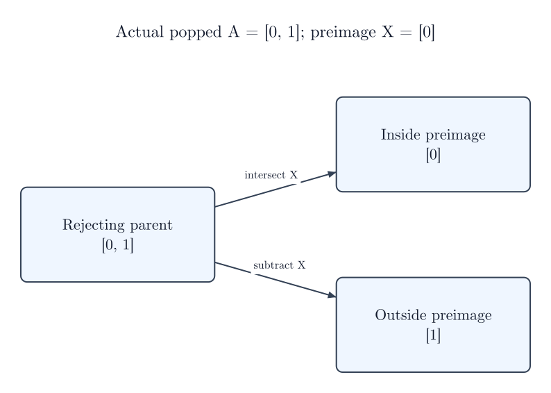
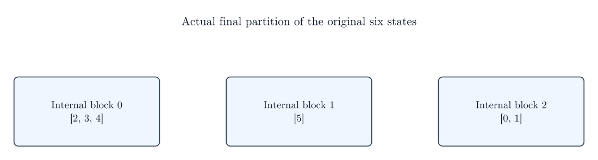
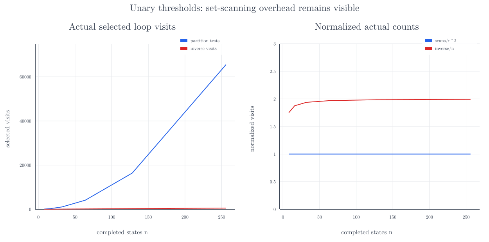
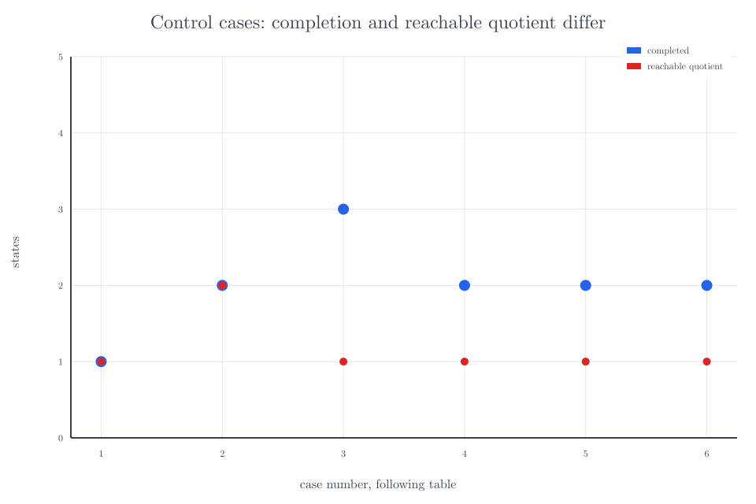

Hopcroft minimization: actual splits and the cost of set-based refinement
Abstract
DFA minimization merges states with the same future acceptance behavior. Hopcroft's worklist rule uses predecessor sets to split current blocks, scheduling a smaller half when a parent is not already pending. We begin with a three-state unary language, retain the original six-state example, and inspect actual popped splitters, preimages and proper splits. Exact finite-product searches verify language preservation beyond a bounded list of sample words. A unary family then separates inverse-transition visits from whole-partition scans: this implementation preserves the worklist rule but uses ordered sets and scans every block, so the textbook optimized time bound is not its measured cost. Partial, unreachable and zero-symbol machines make completion and reachability explicit.
Three states, one proper split
Consider unary words over symbol 0, accepting exactly lengths at least 2. States 0,1,2 count progress; state 2 accepts and self-loops. The initial partition is accepting {2}, rejecting {0,1}, with both blocks pending. The implementation pops the last pending block first: A={0,1}. Its symbol 0 preimage is X={0}, since only state 0 transitions into A. This splits {0,1} into {0} and {1}. The parent has already been popped, so the equal-size tie schedules the inside half {0}. The following trace and diagram show that actual split, not a reconstruction from the final answer.
#include <dm/dm.hpp>
int main() {
std::filesystem::create_directories("build");
const auto input = dm::algorithms::dfa_unary_threshold(2);
const auto t = dm::algorithms::hopcroft_minimize_trace(input);
std::print("| pop | symbol | actual splitter | actual preimage | proper splits |\n| ---: | ---: | --- | " "--- | ---: |\n");
for (const auto &pass : t.passes)
std::print("| {} | {} | {} | {} | {} |\n", pass.pop_index, pass.symbol,
pass.splitter, pass.predecessors, pass.splits.size());
const auto &pass = t.passes.front();
const auto &split = pass.splits.front();
std::print("\nFirst split parent {}; inside {}; outside {}; scheduled inside {}.\n\nActual pops {}; " "proper splits {}; final reachable states {}; capture units {}.\n",
split.parent, split.inside, split.outside,
split.schedule == dm::algorithms::HopcroftSchedule::Inside,
t.run.work.splitter_pops, t.run.work.splits,
t.run.result.num_states, t.captured_entries);
dm::graphics::Diagram diagram(65, 1100);
dm::graphics::DiagramNodeStyle style;
style.width = 4.3;
style.height = 2.1;
style.font_size = 22;
diagram.node("parent", {0, 0},
std::format("Rejecting parent\n{}", split.parent), style).node(
"in", {7, 2}, std::format("Inside preimage\n{}", split.inside), style).node("out", {7, -2}, std::format("Outside preimage\n{}", split.outside), style).edge("parent", "in", "intersect X").edge("parent", "out", "subtract X").text({3.5, 4.5}, std::format("Actual popped A = {}; preimage X = {}", pass.splitter, pass.predecessors), 24).save_svg("build/hopcroft_tiny.svg");
if (t.run.result.num_states != 3 || t.run.work.splits != 1 ||
!dm::algorithms::dfa_equivalence(input, t.run.result).equivalent)
throw std::runtime_error("tiny minimization");
}| pop | symbol | actual splitter | actual preimage | proper splits |
|---|---|---|---|---|
| 1 | 0 | [0, 1] | [0] | 1 |
| 2 | 0 | [0] | [] | 0 |
| 3 | 0 | [2] | [1, 2] | 0 |
First split parent [0, 1]; inside [0]; outside [1]; scheduled inside true.
Actual pops 3; proper splits 1; final reachable states 3; capture units 20.

Derive state equivalence and stable refinement
For a complete DFA with transition function delta and accepting set F, define p equivalent to q when every finite suffix w gives the same acceptance from both states:
The empty suffix forces accepting and rejecting states into separate initial blocks. For a current splitter A and symbol c, form its preimage
Whenever a block Y meets both X and its complement, replace Y by its intersection and difference. Equivalent states never separate: if one c-successor enters a union of equivalence classes, the other's equivalent successor must do so too. At a stable partition, members of a block share acceptance and send each symbol into the same block. Induction on suffix length then proves that every member accepts exactly the same suffixes. Thus the stable quotient merges precisely the equivalent states. Only its reachable blocks belong in the minimal machine for the given start.
A pending parent is replaced by both halves, preserving its outstanding distinction. For a nonpending parent, processing one half suffices once the parent distinction is covered: entry into the other child is entry into the parent minus entry into the chosen child. The currently popped splitter remains an immutable copy across all symbols, even if its original block is refined during processing. Choosing the smaller half limits repeated newly scheduled memberships. The implementation preserves intersection-first partition order, last-in-first-out splitters and ascending symbols. An equal-size nonpending split chooses the intersection half. These choices affect history and numbering, not the accepted language.
Preserve the original six-state example
The original two-symbol transition table has rows (1,2), (0,3), (4,5), (4,5), (4,5), (5,5), with start 0 and accepting states 2,3,4. All six states are reachable. States 0,1 have the same future language; so do states 2,3,4; state 5 is the rejecting sink. The three classes are distinguishable: acceptance separates the middle class immediately, and the one-symbol suffix 1 separates {0,1} from {5}.
The next program prints actual internal partition IDs and the returned quotient's transition table separately. Internal IDs index completed-state blocks; returned states use ascending-symbol BFS from the start and can have different numbers. The diagram shows the actual internal classes. Language equality uses exhaustive exploration of the finite product automaton: it proves equality for all finite words, rather than only the original length-at-most 6 check. Moore's independently implemented signature refinement supplies an additional state-count comparison.
#include <dm/dm.hpp>
int main() {
std::filesystem::create_directories("build");
const auto input = dm::algorithms::hopcroft_example_dfa();
const auto t = dm::algorithms::hopcroft_minimize_trace(input);
const auto eq = dm::algorithms::dfa_equivalence(input, t.run.result);
const auto moore = dm::algorithms::moore_minimize(input);
std::print("Original states {}; reachable minimized states {}; Moore states {}; exact equivalence {}; " "product pairs examined {}.\n",
input.num_states, t.run.result.num_states, moore.num_states,
eq.equivalent, eq.pairs_examined);
std::print("\n| original state | final internal block | accepting |\n| ---: | ---: | --- |\n");
std::map<int, std::vector<int>> groups;
for (int i = 0; i < input.num_states; ++i) {
groups[t.run.blocks[i]].push_back(i);
std::print("| {} | {} | {} |\n", i, t.run.blocks[i],
bool(input.accept[i]));
}
std::print("\n| returned BFS state | symbol0 destination | symbol1 destination | accepting |\n| ---: | " "---: | ---: | --- |\n");
for (int i = 0; i < t.run.result.num_states; ++i)
std::print("| {} | {} | {} | {} |\n", i, t.run.result.delta[i][0],
t.run.result.delta[i][1], bool(t.run.result.accept[i]));
std::print("\n| actual pop | symbol | splitter | preimage | proper splits |\n| ---: | ---: | --- | --- " "| ---: |\n");
for (const auto &pass : t.passes)
std::print("| {} | {} | {} | {} | {} |\n", pass.pop_index, pass.symbol,
pass.splitter, pass.predecessors, pass.splits.size());
dm::graphics::Diagram diagram(65, 1100);
dm::graphics::DiagramNodeStyle style;
style.width = 4.8;
style.height = 2.3;
style.font_size = 22;
std::size_t column = 0;
for (const auto & [id, members] : groups) {
diagram.node(std::to_string(id), {7. * column, 0},
std::format("Internal block {}\n{}", id, members), style);
++column;
}
diagram.text({7, 3}, "Actual final partition of the original six states", 25).save_svg("build/hopcroft_original.svg");
if (!eq.equivalent || t.run.result.num_states != 3 || moore.num_states != 3)
throw std::runtime_error("original equivalence");
}Original states 6; reachable minimized states 3; Moore states 3; exact equivalence true; product pairs examined 6.
| original state | final internal block | accepting |
|---|---|---|
| 0 | 2 | false |
| 1 | 2 | false |
| 2 | 0 | true |
| 3 | 0 | true |
| 4 | 0 | true |
| 5 | 1 | false |
| returned BFS state | symbol0 destination | symbol1 destination | accepting |
|---|---|---|---|
| 0 | 0 | 1 | false |
| 1 | 1 | 2 | true |
| 2 | 2 | 2 | false |
| actual pop | symbol | splitter | preimage | proper splits |
|---|---|---|---|---|
| 1 | 0 | [0, 1, 5] | [0, 1, 5] | 0 |
| 1 | 1 | [0, 1, 5] | [2, 3, 4, 5] | 1 |
| 2 | 0 | [5] | [5] | 0 |
| 2 | 1 | [5] | [2, 3, 4, 5] | 0 |
| 3 | 0 | [2, 3, 4] | [2, 3, 4] | 0 |
| 3 | 1 | [2, 3, 4] | [0, 1] | 0 |

Measured visits expose the representation cost
The optimized Hopcroft bound depends on efficient inverse transitions, state-to-block lookup and updating only affected blocks. A smaller-half charging argument bounds repeated fresh splitter memberships logarithmically, but does not pay for arbitrary scans of the entire partition. Hopcroft's original implementation discussion explicitly describes list representations and direct membership/location information.
This library version stores blocks as ordered sets, constructs predecessor unions, scans every partition block for each nonempty preimage, and searches the pending worklist by set equality. Those scans remain even when the preimage is tiny. With completed n states and k symbols, each proper split increases the partition count once and appends exactly one additional worklist entry. Thus pops are at most initial blocks plus proper splits, hence at most n. There are at most kn symbol passes; each nonempty pass visits all n partition states. Together with ordered-set insertion/membership and pending comparisons, a conservative implementation bound is O((k+1)n^2 log(n+1)) time, with O(n(k+1)) ordinary working/output storage. This is not a claim that every input attains that upper bound.
For the unary threshold family with n at least 8, every state is reachable and distinguishable. Its actual whole-partition membership count is n2, while inverse-transition visits are 2n-2. The next figures plot producing counters and their normalized values. They replace the old unmeasured n2-versus-n-log-n curves; neither curve below represents elapsed time or Moore work. Moore is checked for the same minimal state count only.
#include <dm/dm.hpp>
int main() {
std::filesystem::create_directories("build");
std::vector<double> sizes, scans, inverse, scan_ratio, inverse_ratio;
std::print("| input states | minimized states | Moore states | pops | proper splits | inverse visits | " "partition-state tests |\n| ---: | ---: | ---: | ---: | ---: | ---: | ---: | ---: |\n");
for (std::size_t n : {8, 16, 32, 64, 128, 256}) {
const auto input = dm::algorithms::dfa_unary_threshold(n - 1);
const auto r = dm::algorithms::hopcroft_minimize_run(input);
const auto moore = dm::algorithms::moore_minimize(input);
std::print("| {} | {} | {} | {} | {} | {} | {} |\n", n,
r.result.num_states, moore.num_states, r.work.splitter_pops,
r.work.splits, r.work.predecessor_edges,
r.work.partition_states);
sizes.push_back(n);
scans.push_back(r.work.partition_states);
inverse.push_back(r.work.predecessor_edges);
scan_ratio.push_back(double(r.work.partition_states) / (double(n) * n));
inverse_ratio.push_back(double(r.work.predecessor_edges) / n);
if (r.result.num_states != int(n) || moore.num_states != int(n) ||
r.work.partition_states != n * n ||
r.work.predecessor_edges != 2 * n - 2)
throw std::runtime_error("family counters");
}
auto left =
dm::graphics::RPlot::create(), right = dm::graphics::RPlot::create();
left.line(sizes, scans, "partition tests", {37, 99, 235}, 2.).line(
sizes, inverse, "inverse visits", {220, 38, 38}, 2.).title(
"Actual selected loop visits").x_label("completed states n").y_label(
"selected visits").y_limits(0, 75000);
right.line(sizes, scan_ratio, "scans/n^2", {37, 99, 235}, 2.).line(
sizes, inverse_ratio, "inverse/n", {220, 38, 38}, 2.).title(
"Normalized actual counts").x_label("completed states n").y_label(
"normalized visits").y_limits(0, 3);
auto layout = dm::graphics::RLayout::create(1, 2);
layout.add(left).add(right).size(1250, 620).title("Unary thresholds: set-scanning overhead remains visible").fit_panels().save_svg("build/hopcroft_work.svg");
}| input states | minimized states | Moore states | pops | proper splits | inverse visits | partition-state tests |
|---|---|---|---|---|---|---|
| 8 | 8 | 8 | 8 | 6 | 14 | 64 |
| 16 | 16 | 16 | 16 | 14 | 30 | 256 |
| 32 | 32 | 32 | 32 | 30 | 62 | 1024 |
| 64 | 64 | 64 | 64 | 62 | 126 | 4096 |
| 128 | 128 | 128 | 128 | 126 | 254 | 16384 |
| 256 | 256 | 256 | 256 | 254 | 510 | 65536 |

Completion, reachability and capture limits
Missing transitions and start=-1 denote an implicit rejecting sink. Completion materializes one sink only when needed, retaining all original states; therefore a valid zero-state machine becomes one rejecting state. Refinement includes unreachable completed states, then quotient BFS drops unreachable blocks. With a zero-symbol alphabet only epsilon exists, so only the start's acceptance matters in the returned one-state machine. All-accepting and all-rejecting complete machines collapse to one reachable state as well.
New run/trace calls default to 100000 completed states and one million completed transitions, including an added sink and unreachable states. Complete input validation precedes these policies and graph copies. Zero disables each policy. Legacy hopcroft_minimize has no optional policy caps. Counts and container sizes still have representation limits.
Histories own their vectors and add storage beyond the ordinary working/output bound. Initial capture counts one record per initial block and one ID per completed state. Every symbol pass adds 1+AX; each proper split adds 1Yinsideoutside. The default one-million-unit cap is admitted online before history copies once triggering sets are known. It excludes ordinary working sets, output, metadata and capacity, and is not a byte or peak-memory limit. A failure throws without returning truncated history; run without capture ignores this cap. A zero-symbol machine may pop pending blocks while recording no symbol passes.
#include <dm/dm.hpp>
int main() {
std::filesystem::create_directories("build");
using DFA = dm::algorithms::DFA;
const std::vector<DFA> inputs = {DFA{}, DFA{1, 1, {{-1}}, 0, {1}},
DFA{3, 1, {{0}, {1}, {2}}, 0, {0, 1, 1}},
DFA{2, 0, {{}, {}}, 1, {0, 1}},
DFA{2, 1, {{1}, {0}}, 0, {1, 1}},
DFA{2, 1, {{1}, {0}}, 0, {0, 0}}};
const std::vector<std::string> labels = {"empty input", "partial accepting",
"unreachable accepting",
"zero alphabet", "all accepting",
"all rejecting"};
std::vector<double> x, completed, result;
std::print("| case | supplied states | completed states | returned reachable states | exact equivalence " "| pops | symbol passes |\n| --- | ---: | ---: | ---: | --- | ---: | ---: |\n");
for (std::size_t i = 0; i < inputs.size(); ++i) {
const auto t = dm::algorithms::hopcroft_minimize_trace(inputs[i]);
const bool same =
dm::algorithms::dfa_equivalence(inputs[i], t.run.result).equivalent;
std::print("| {} | {} | {} | {} | {} | {} | {} |\n", labels[i],
inputs[i].num_states, t.run.completed_states,
t.run.result.num_states, same, t.run.work.splitter_pops,
t.passes.size());
x.push_back(i + 1);
completed.push_back(t.run.completed_states);
result.push_back(t.run.result.num_states);
if (!same)
throw std::runtime_error("control language");
}
const auto tiny = dm::algorithms::dfa_unary_threshold(2);
const auto t = dm::algorithms::hopcroft_minimize_trace(tiny);
const auto exact =
dm::algorithms::hopcroft_minimize_trace(tiny, {3, 3, t.captured_entries});
bool history = false, graph = false, domain = false;
try {
(void) dm::algorithms::hopcroft_minimize_trace(tiny,
{3, 3,
t.captured_entries - 1});
} catch (const std::length_error &) {
history = true;
}
try {
(void) dm::algorithms::hopcroft_minimize_run(DFA{1, 1, {{-1}}, 0, {1}},
{1, 1, 0});
} catch (const std::length_error &) {
graph = true;
}
try {
(void) dm::algorithms::hopcroft_minimize_run(DFA{2, 1, {{2}, {0}}, 0,
{0, 0}}, {1, 1, 1});
} catch (const std::invalid_argument &) {
domain = true;
}
std::print("\nExact tiny capture units {}; one-short capture rejected {}; projected sink graph rejected " "{}; malformed target rejected before caps {}.\n",
exact.captured_entries, history, graph, domain);
auto p = dm::graphics::RPlot::create();
p.points(x, completed, "completed", {37, 99, 235}, 7.).points(
x, result, "reachable quotient", {220, 38, 38}, 5.).title(
"Control cases: completion and reachable quotient differ").x_label(
"case number, following table").y_label("states").y_limits(0, 5).save_svg("build/hopcroft_controls.svg");
if (!history || !graph || !domain)
throw std::runtime_error("admission controls");
}| case | supplied states | completed states | returned reachable states | exact equivalence | pops | symbol passes |
|---|---|---|---|---|---|---|
| empty input | 0 | 1 | 1 | true | 1 | 0 |
| partial accepting | 1 | 2 | 2 | true | 2 | 2 |
| unreachable accepting | 3 | 3 | 1 | true | 2 | 2 |
| zero alphabet | 2 | 2 | 1 | true | 2 | 0 |
| all accepting | 2 | 2 | 1 | true | 1 | 1 |
| all rejecting | 2 | 2 | 1 | true | 1 | 1 |
Exact tiny capture units 20; one-short capture rejected true; projected sink graph rejected true; malformed target rejected before caps true.

Validation and primary reference
Three sanitizer tests cover all 972 two-state partial binary-alphabet DFAs, reconstruct every actual preimage/split/partition and capture count, and verify selected work. Exact product searches prove language preservation and distinguish every pair of returned states. Fixture, threshold, malformed-input, policy, empty/zero-alphabet and ownership controls also execute. Frozen pre-conversion comparisons preserve all quotient fields across 4096 additional machines, including nonboolean acceptance bytes. An independent Python table-filling oracle checks all state-pair equivalences for 6804 complete/partial machines and independently explores their language products. Existing automata/Brzozowski tests, compiled documentation examples, symbol hovers, actual MEP programs, inspected figures and verified Markdown/HTML result/image exports are conversion gates.
The original method is [John Hopcroft, An n log n Algorithm for Minimizing States in a Finite Automaton](https://www.cs.cmu.edu/~cdm/resources/Hopcroft1971.pdf), Stanford report STAN-CS-71-190, 1971; published in Theory of Machines and Computations, pp 189–196, [DOI 10.1016/B978-0-12-417750-5.50022-1](https://doi.org/10.1016/B978-0-12-417750-5.50022-1). Its implementation discussion motivates the distinction between the worklist idea and efficient affected-block updates. The small fixtures here and the unary family are explicit native inputs, not digitized experimental timings from that paper.